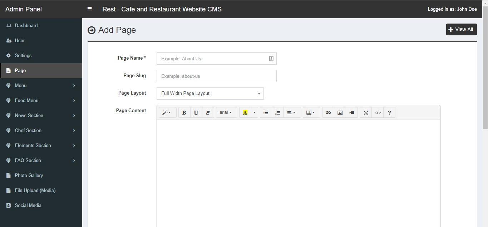

Rest
Cafe and Restaurant Website CMS
- Created: March 21, 2018
- Author: xicia
- PHP Version: 5.4 or more is needed
- Framework: No framework is used
- Server: Apache
- Support Email: jbbr.1990@gmail.com
Introduction
Rest is a responsive restaurant and cafe related Website Content Management System (CMS). This CMS is built completely with PHP and MySQL. It has a nice and attractive front end and back end interface that are really awesome and eyecatching. The back end has a lot of nice and maintainable features that are needed for a modern and professional website to handle the contents easily by client. Almost all kinds of changes are possible to do using the admin panel without having any kind or programming language knowledge.
This CMS is built using the procedural php (with PDO feature) and without any framework. For this reason, it can be customized easily by most of the developers. This CMS is strong against SQL injection, XSS attack and CSRF vulnerabilities; and your website will be safe. Also in all pages, admin level security and invalid page url submission checking were done.
Features
This CMS script has the following features:
- Easy and simple interface to use
- Fully responsive for any kind of device
- Powerful admin backend like WordPress
- Clean coding with proper commenting
- Secured coding against SQL injection, XSS attack and CSRF vulnerabilities
- Direct access or invalid URL press stopped for each pages
- Statistics of some data in dashboard
- Multilevel user management
- Multi language support
- Theme color change option
- Unlimited news category and post creation and management
- Unlimited photo upload and management
- Unlimited page creation and management
- Unlimited main menu creation with dropdown
- Unlimited footer menu creation
- Unlimited chef creation and management
- Unlimited service creation and management
- Unlimited testimonial creation and management
- Unlimited FAQ categories and item creation and management
- Facebook comment section for each post
- SEO meta data setup for each post, page and category
- SEO friendly URL structure
- Unlimited file uploading system
- All major social media URL setup for top bar and sidebar
Requirements
Before starting to install our item, make sure you fulfill the following requirements:
- For Local Server installation, you need to have XAMPP, WAMP or any apache server with PHP and MySQL. But, remember, we do not give guarantee to use our script in local server without problem (it will depend totally up on you.)
- Mod Rewrite will have to be enabled if you want to get SEO friendly URL. Examples are given below:
If Mod Rewrite is not enabled, a page url will be like:http://www.yourwebsite.com/page.php?slug=about-us
If Mod Rewrite is enabled, a page url will be like:http://www.yourwebsite.com/page/about-us
- You have use any live LINUX server to use our script without problem.
- Required PHP version in server >= 5.4.
- PDO must be enabled in the server.
Installation
In order to install the CMS, please follow these steps:
- Download the main zip file from Codecanyon and extract it. You will get total 3 folders in there: database, documentation and upload.
- In the upload folder, you will get a zip file cms.zip.
- Upload the cms.zip file into your server using FTP or Cpanel. Extract this and use. You can use our php script into root domain or subdomain.
- Create mysql database using cpanel or your hosting provider's system. Then import the xicia_rest.sql file (you will get it in database folder) into your created database.
-
Now you will have to edit the configuration file. Into our cms folder, you will get a folder named admin.
-
Go to admin > inc folder and open up the config.php file with any text editor (for example: Notepad++).
-
Into the config.php file you will get the important information. If you do not setup this correctly, the script will not work. Change the marked information like the image below.
- Time Zone: Write your proper timezone here
- Host Name: This is your database host name or IP address
- Database Name: Create a database name in your host (localhost or webhost) and put name here
- Database Username: Username of the database you created
- Database Password: Password of the database you created
- BASE URL (OPTIONAL):
If you do not understand about BASE_URL setup, just keep the line as below:define("BASE_URL", "");If you are familier about base url and mod_rewrite mode, then follow these steps (if necessary):
1. If you want to make all the URLs as SEO friendly URLs, you will have to use the .htaccess file that is coming with the script. Some server can make it hidden. So make sure that you have uploaded it correctly in your server.
2. You will have to activate the mod_rewrite in your server and then setup the base url of your website like the following line:
define("BASE_URL", "http://yourwebsite.com/"); -
MOD REWRITE (OPTIONAL):
You can make MOD_REWRITE "Off" or "On". But become careful. If you make this "On", you must have to setup BASE URL correctly (as described above). Otherwisre, the script will not work.
define("MOD_REWRITE", "Off");
Language Setup
The default language is "English" in this script. If you want to change it in your own language, please follow the steps below:
-
Go to admin > languages folder. You will get total 3 files. Those are en.php, es.php and fr.php.
-
en.php means English. This is setup by default.
es.php means Spanish.
fr.php means French.
We have setup these 3 languages in this script. -
If you want to setup the language Spanish instead of English, then you have to call the es.php file instead of en.php file. In order to do this, open up the header.php file in the main root folder with a text editor.
-
After openning the file with a text editor you will see like this:
Change the en.php with the desired language file name like es.php or fr.php and then save the file header.php. - If you want to setup any other language like Arabic or Dutch etc., you have to create a *.php file in the location: admin > languages like ar.php.
- Then just copy code from en.php or fr.php and paste into the newly created ar.php file and save this file. Now you have to change the words for the new language in this file. (you can only copy codes when you will open the file with a text editor)
- Suppose, you copied code from fr.php into ar.php. We are now explaining the codes.
-
In the new ar.php file, you will see codes like this when you will open the file with a text editor:
- In the image, it is explained well how to change the codes. Please check that.
- After changing the codes, you have to save this file and the process is done.
Dashboard
In the dashboard, you will be able to get all the total data for users, categories, news, photos, chefs and food menus.
Profile Information
From the top right corner menu, any user can change his profile information, password etc.
User
Super admin can add unlimited number of Admin users in this script. Here user's email address will be treated as username in this website. User can be setup as active, edit or delete.
Admin can do almost everything of this website, except removing Super Admin and managing other Admin users.
Settings
In this cms, you can change the following things in the settings:
- Logo - You can change the website's logo here
- Favicon - You can change the website's favicon icon here. As an icon you can upload a photo.
- General Content - About us text (footer), copyright text, contact address, contact email, contact phone, contact fax, contact map iframe code
- Email Settings - Contact form and reservation form email address and message settings
- News - How many recent and popular news in footer and sidebar
- Home Page Meta Information - Meta Title, Meta Keywords and Meta Description
- Home Page Sections On and Off - Service, About, Food Menu, Testimonial and Chef Section
Settings - Email
In the email settings section, you will be able to setup email address, email subject and email sending thank you message for the contact form and the reservation form.
Settings - News
In the news settings section, you will be able to setup how many recent and popular news will be shown in the footer and sidebar sections.
Settings - Home Page Meta
In the home meta settings section, you will be able to setup Meta Title, Meta Keywords and Meta Description for the website's home page.
Settings - Home Page Sections
In the home page settings section, you will be able to setup the following things:
- Service Section - You can make this section on or off in home page
- About Section - You can make this section on or off in home page. Also you can setup about section title, subtitle, contact, photo for home page.
- Food Menu Section - You can make this section on or off in home page. Also you can setup food menu section title and subtitle for home page.
- Testimonial Section - You can make this section on or off in home page
- Chef Section - You can make this section on or off in home page. Also you can setup chef section title and subtitle for home page.
Settings - Theme Color
In the theme color section, you will be able to change the website's primary and secondary color. So the theme color will be changed that way.
Settings - Reservation
In the reservation section, you will be able to setup the reservation text, button text, button url and reservation active/inactive for the bottom section (above footer) of the website.
Page
When you will try to add a new page, you will have to give page name, page slug, page layout, page content, banner photo, active status, seo data (meta title, keyword and description).
Page name and banner are mandatory fields.
You can add, edit, view and delete pages any time from the admin panel.

Main Menu
You can add category item, page item, or any other manual link as the main menu in this cms. When you will add category or page item as your menu item, select the desired category or page from the dropdown, then give them a order and select the parent for them. If you want to setup that menu as top level menu item, select No Parent option from the dropdown, otherwise select another menu as parent. In Other Menu section, you can setup an external link or manual link and name as menu item. In this case, you will get an extra URL field to put url manually.
Footer Menu
You can add category item, page item, or any other manual link as the footer menu in this cms. When you will add category or page item as your menu item, select the desired category or page from the dropdown, then give them a order for them. In Other Menu section, you can setup an external link or manual link and name as menu item. In this case, you will get an extra URL field to put url manually.
Food Menu Category
When you will try to add a new food menu category, you will have to give category name and Caegory Order.
Category name is mandatory field.
You can add, edit, view and delete food menu categories any time from the admin panel.
Food Menu
When you will try to add a new food menu, you will have to give Food menu name, Food menu description, Food menu price, Featured photo, Order and Food menu caegory.
Food menu name, Food menu description, Food menu price, Food menu category are mandatory fields.
You can add, edit, view and delete food menu any time from the admin panel.

News Category
When you will try to add a news category, you will have to give category name, Category slug and SEO information (meta title, keyword and description).
Category name is mandatory field.
You can add, edit, view and delete news categories any time from the admin panel.
News
When you will try to add a news item, you will have to give News title, News slug, News content, News short content, News date, Featured photo, News category, Publisher and SEO information (meta title, keyword and description).
News title, News content, News short content, News date, News category are mandatory fields.
You can add, edit, view and delete news item any time from the admin panel.
Comment
Go to the facebook developer section (https://developers.facebook.com/docs/plugins/comments/) to get your comment codes. Then just place it in the marked textarea and update it.
Chef Designation
When you will try to add a new designation, you will have to give Designation name.
Designation name is mandatory field.
You can add, edit, view and delete designation any time from the admin panel.
Chef
When you will try to add a new chef, you will have to give Chef name, Chef slug, Designation, Photo, Banner, Details, Social Media IDs, Phone, Email, Website, Order, Active Status, SEO Information (meta title, keyword and description).
Chef name, Chef designation, Photo, Banner are mandatory fields.
You can add, edit, view and delete chef any time from the admin panel.
Slider
When you will try to add a new slider item, you will have to give Photo, heading, content, button text, button url, order, active status.
Slider Photo is mandatory field.
You can add, edit, view and delete slider any time from the admin panel.

Testimonial
When you will try to add a new testimonial item, you will have to give Name, designation, company, photo, comment, order.
Name, designation, company, photo, comment are mandatory fields.
You can add, edit, view and delete testimonial any time from the admin panel.
Service
When you will try to add a new service item, you will have to give Name, description, featured photo, order, show on home option.
Name, description, featured photo, show on home option are mandatory fields.
You can add, edit, view and delete service any time from the admin panel.
FAQ Category
When you will try to add a new FAQ category, you will have to give FAQ category name.
FAQ Category name is mandatory field.
You can add, edit, view and delete FAQ categories any time from the admin panel.
FAQ
When you will try to add a new FAQ item, you will have to give FAQ title, FAQ content, FAQ category.
FAQ title, FAQ content, FAQ category are mandatory fields.
You can add, edit, view and delete FAQ any time from the admin panel.
Photo Gallery
When you will try to add a new photo in gallery, you will have to give Photo caption, Photo.
Photo caption, Photo are mandatory fields.
You can add, edit, view and delete photos any time from the admin panel.

File Upload
When you will try to add a file, you will have to give File title or name, File.
File title or name, File are mandatory fields.
Upload your desired file. Only these files are allowed: jpg, jpeg, gif, png, pdf, doc, docx, ppt, pptx, xls, xlsx, zip, rar.
You can add, edit, view and delete files any time from the admin panel.
These files can be used anywhere via a text editor for a page.
Social Media
This CMS supports to use total 16 social media to show as icon in the website. For each item, you will get to put a URL section. If you keep any URL field blank, that will not be shown in the website. The social media list is given below:
- Google Plus
- YouTube
- Tumblr
- Flickr
- Snapchat
- Quora
- StumbleUpon
- Delicious
- Digg
Support
Support Process (if support is on)
- First look at the navigation menu on the left side of the documentation. You will get all important topics here.
- Search the entire document pressing "ctrl+F", enter your query string and press "Search".
- If you still do not get the answer of your question, then contact us via codecanyon and always give your live URL when asking for help.
- When asking for help, please provide the details and also give some screenshots if possible.
Why we do not give support through codecanyon comment section?
- Do not ask for support in the comment section of codecanyon. Because our codecanyon account access is restricted and support team will not be able to reply.
- It is tough to track the communication in this way.
- We think, it is not wise to show eveyone your website's URL and other sensitive information.
Support Hours and Time
We generally work for 18 hours a day and 7 days in a week. So you will get very prompt answer always from us within 24-48 hours except the marked holidays.
Advanced or Modification Support
If you request us help, which only needs us to write a couple lines of code, we will assist you in that. But if your query requires to write a lot of codes to be published, we can only provide you guidance and you need to hire a developer if you don't have that skills to implement it yourself.
Bug Fixing
We promise to solve all the bugs as quickly as possible within 24-48 hours after those are brought to our attention.